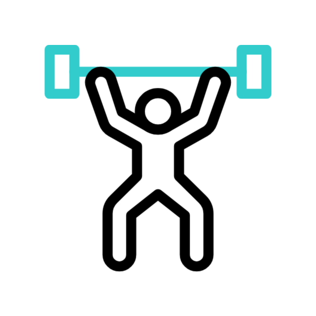
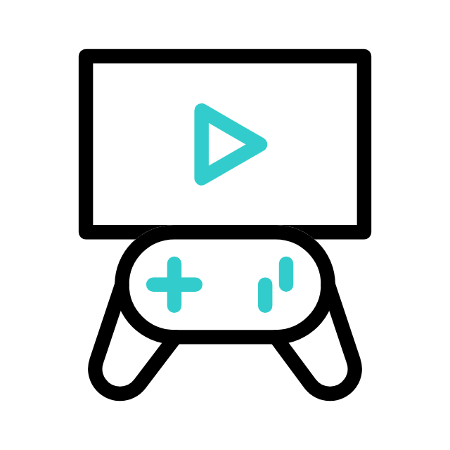

QUI SUIS-JE ?..
Je suis Thibut Philipkumar, apprenant en BTS SIO (Services Informatiques aux Organisations)
à Nevers, dans la spécialité SLAM (Solutions Logicielles et Applications Métiers).
Toujours en cours d'étude, à l'issue de mon BTS j'envisage de continuer par une année de Licence en Développement.
En attendant, je vous invite à découvrir ce portfolio qui présente une sélection de mes réalisations académiques,
de mes compétences et de mon parcours. J'ai le plaisir de partager avec vous mes projets, mon implication dans
le domaine de l'informatique, ainsi que mes compétences en développement et mon cheminement académique.
Retrouvez mon CV ci dessous
CV Lettre de Motivation
Centres d'intérêt

Coder

Sport

Jouer

Voyager